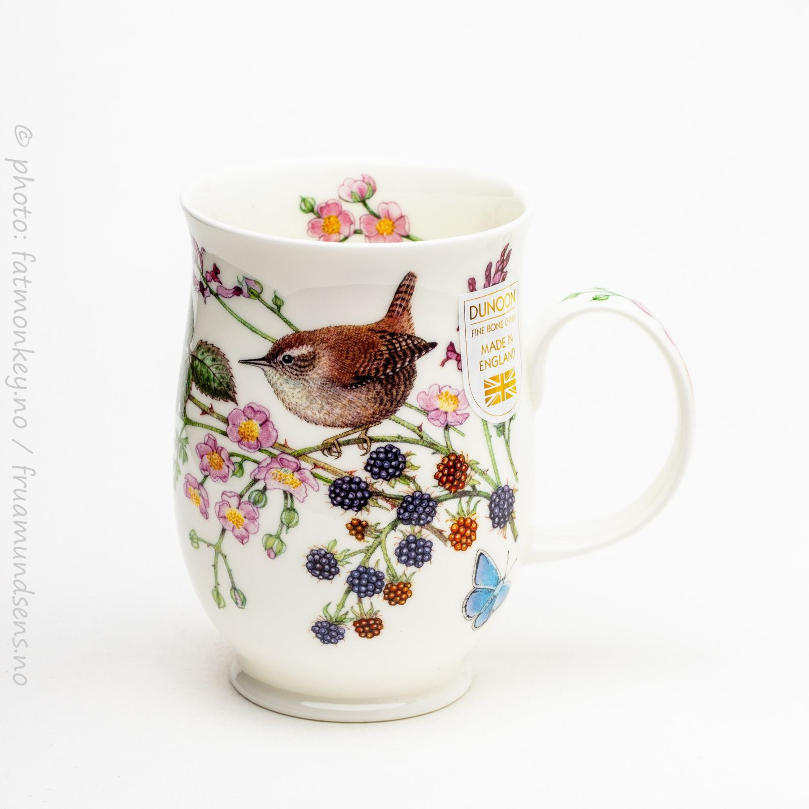
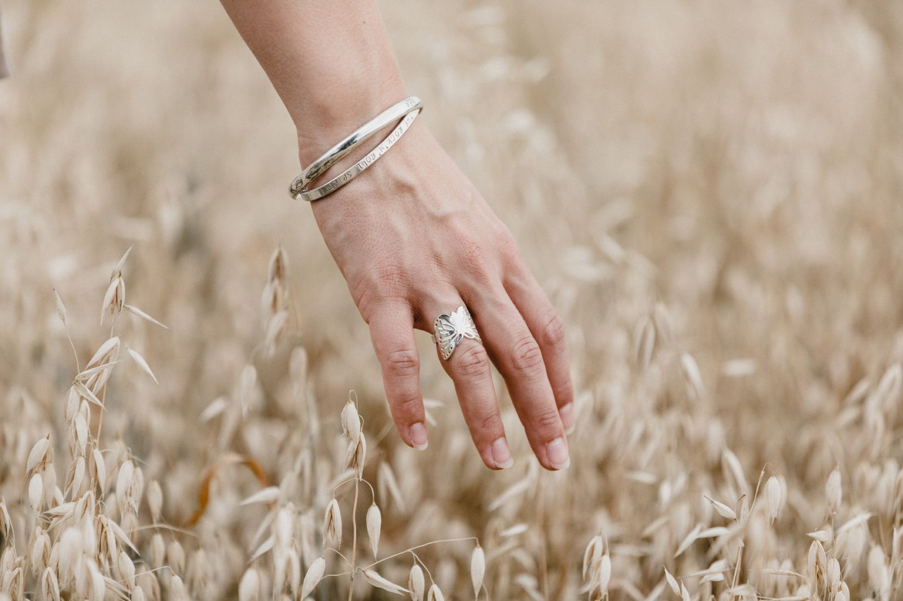
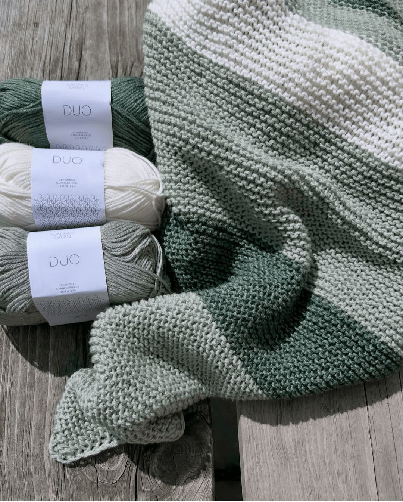

Tovet bøttehatt i tykk ull —
Tovet bøttehatt i tykk ull —
X TIL NETTBUTIKKEN Home Garn Garn Vi startet opp garnavdelingen vår i april 2022, og ønsker å satse litt ekstra på den norske ulla.
Våre hovedleverandører er derfor Rauma, Hillesvåg og Sandnes, og deres norske ullkvaliteter. Men – vi har selvfølgelig også både merino, mohair, silke, lin, bomull og alpakka også, både fra disse leverandørene og fra Solberg, Marte Helgetun, Svarta Fåret, Järbo og Lana Grossa. Og, deilig kasjmir fra Lang Yarns!
og her kan du finne nettbutikken vår med alt det deilige garnet –> nettbutikk garn
Laster inn... Close NETTBUTIKK GARN DUNOON SMYKKEVERKET Kontakt Fru Amundsens AS Verksgata 1 1353 Bærums Verk



Kort fortalt: hva trenger du?
Beskriv saken, så svarer vi med hva det krever og hva det koster.